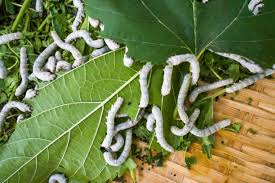
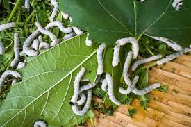

Welcome to the Silk Farming Portal!
Your one-stop solution for all silk farming information and resources.
- Access detailed guides on silk farming techniques and practices.
- Stay updated with the latest news and government schemes for silk farmers.
- Check real-time weather updates and seasonal recommendations.
- Monitor daily market prices for silk cocoons and raw silk.
- Engage with a community of fellow farmers in our discussion forum.
- Get personalized support through our dedicated contact center.
Announcements
- New subsidy for silk farmers in 2024!
- Upcoming training on silkworm rearing techniques on January 15th.
- Government collaboration to promote eco-friendly silk production.
About the Portal
This portal is designed to provide silk cocoon rearing farmers with up-to-date information on silk farming, including best practices, market trends, and government policies.
Featured Articles
- Silkworm Life Cycle: A comprehensive guide to understanding the life stages of silkworms.
- Innovative Mulberry Cultivation: Tips for maximizing yield and maintaining soil health.
- Pest Management in Sericulture: Effective strategies for controlling common pests.
Contact & Support
If you have any questions or need assistance, feel free to reach out to us.
Email: support@silkfarmingportal.com | Phone: +123-456-7890


 
